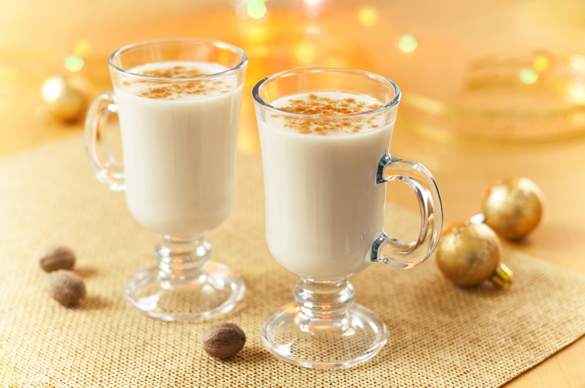

1. Christmas Sugar Cookies

Decorate these delightful cookies to match your holiday spirit!
Ingredients:
- 2 3/4 cups all-purpose flour
- 1 teaspoon baking soda
- 1/2 teaspoon baking powder
- 1 cup unsalted butter, softened
- 1 1/2 cups white sugar
- 1 egg
- 1 teaspoon vanilla extract
- 3 tablespoons milk
- Food coloring and sprinkles for decorating
Instructions:
Preheat your oven to 375°F (190°C). Combine dry ingredients. Beat butter and sugar, then add egg, vanilla, and milk. Mix dry and wet ingredients. Roll dough, cut shapes, and bake for 8-10 minutes.
2. Spiced Apple Cider

Warm up with this aromatic drink on a chilly Christmas evening.
Ingredients:
- 8 cups apple cider
- 2 cinnamon sticks
- 4 whole cloves
- 1 orange, sliced
- 1/4 cup brown sugar (optional)
Instructions:
Combine all ingredients in a pot. Simmer on low heat for 20 minutes. Strain and serve warm.
3. Holiday Herb-Crusted Roast Beef

A centerpiece worthy of your Christmas feast!
Ingredients:
- 4-pound beef roast
- 3 tablespoons olive oil
- 3 cloves garlic, minced
- 1 tablespoon rosemary
- 1 tablespoon thyme
- Salt and pepper to taste
Instructions:
Preheat oven to 350°F (175°C). Rub roast with oil, garlic, and herbs. Roast for 20 minutes per pound or until internal temp is 135°F for medium-rare.
4. Classic Eggnog
This creamy delight is a holiday must-have!
Ingredients:
- 4 egg yolks
- 1/3 cup sugar
- 2 cups milk
- 1 cup heavy cream
- 1/2 teaspoon nutmeg
- 1 teaspoon vanilla extract
- Optional: 1/2 cup rum or bourbon
Instructions:
Whisk yolks and sugar until light. Heat milk with cream and nutmeg. Slowly whisk hot mixture into eggs. Cool, add vanilla, and chill.
5. Perfect Pumpkin Pie

End your holiday meal with this crowd-pleasing dessert.
Ingredients:
- 1 can (15 oz) pumpkin puree
- 1 can (12 oz) evaporated milk
- 3/4 cup sugar
- 2 eggs
- 1 teaspoon cinnamon
- 1/2 teaspoon nutmeg
- 1/2 teaspoon ginger
- 1 unbaked pie crust
Instructions:
Preheat oven to 425°F (220°C). Mix all ingredients. Pour into crust and bake for 15 minutes, then reduce heat to 350°F (175°C) and bake for 40-50 minutes.

{kind=link}